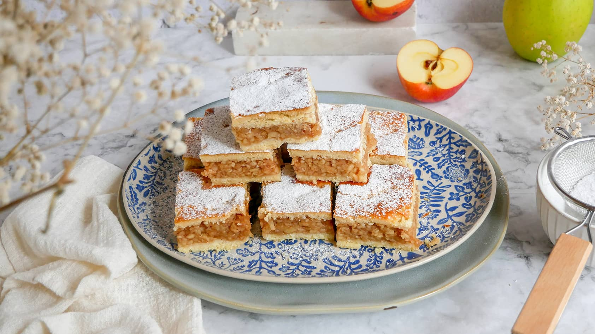

Almás Pite
Az almás pite egy klasszikus desszert, amely friss almával töltött tésztából készül. Egy finom és hagyományos édesség, amelyet sokan kedvelnek a világon.

Hozzávalók:
- 50dkg liszt
- 25dkg vaj
- 15dkg cukor
- 1csom vaníliás cukor
- 1csom sütőpor
- 2db tojás
- 1kg alma
- 15dkg porcukor
- 1db citrom
- 1tk fahéj
- 10dkg darált dió
A tésztához:
A töltelékhez:
Elkészítés:
- Az almás pite elkészítéséhez a sütőporral elkevert lisztet összemorzsoljuk a vajjal. Hozzáadjuk a cukrot, a vaníliás cukrot, a tojásokat, jól összegyúrjuk, és fóliába csomagolva a hűtőben 1 órát pihentetjük.
- Ezalatt meghámozzuk az almát, lereszeljük, ráfacsarjuk a citrom levét, és a cukorral, a fahéjjal és a lereszelt citromhéjjal ízesítjük. 10 perc után lazán kinyomodjuk belőle a sok levet.
- A tésztát két részre osztjuk (1/3-2/3 arányban), és lisztezett deszkán 3-4 mm vastagra nyújtjuk.
- A nagyobb tésztalapot sütőpapírral bélelt tepsibe fektetjük. Megszórjuk a darált dióval, egyenletesen elosztjuk rajta az almás tölteléket, végül beborítjuk a másik tésztalappal.
- Az almás pite tetejét megkenjük a felvert tojással, villával finoman megszurkálgatjuk, és megrajzoljuk a rácsokat.
- Végül a 190 fokra előmelegített sütőben 30-35 perc alatt aranybarnára sütjük.